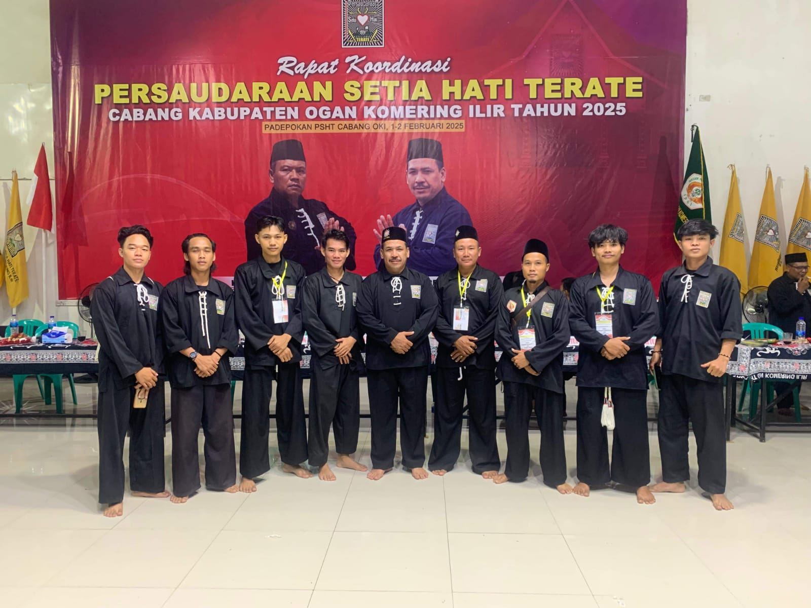

Kegiatan rapat koordinasi cabang OKI
Rapat koordinasi cabang OKI yang di hadiri seluruh ketua rayon sekabupaten OKI rapat ini bertujuan untuk memper erat persaudaraan. selain itu kita juga membahas beberapa hal penting untuk persiapan pengesahan mulai dari biaya pengesahan sampai lokasi pengesahan